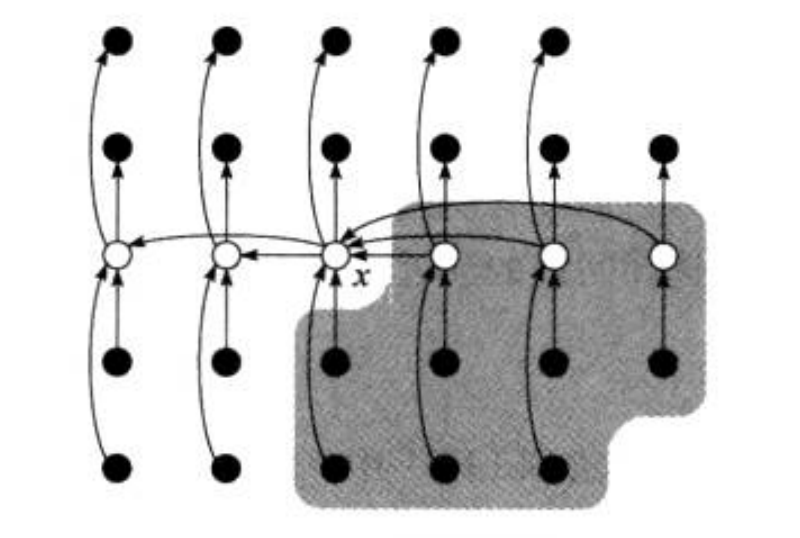

我们如何找到一个由n n n i i i
输入 ：一个包含n n n A A A i i i 1 ≤ i ≤ n 1 \le i \le n 1 ≤ i ≤ n
输出 ：元素x ∈ A x\in A x ∈ A A A A i − 1 i-1 i − 1
最小值和最大值 在一个有n n n n − 1 n-1 n − 1
1 2 3 4 5 6 MINIMUM(A) min = A[1] for i = 2 to A.length if min > A[i] min = A[i] return min
同时找到最小值和最大值 显然，可以分别独立地找出最小值和最大值，各需要n − 1 n-1 n − 1 2 n − 2 2n-2 2 n − 2
事实上，只需要最多3 ⌊ n / 2 ⌋ 3\lfloor n/2\rfloor 3 ⌊ n / 2 ⌋
期望为线性时间的选择算法 基于快速排序，但是每次只处理划分的一边。
这其实是学院21级数据结构与算法期末考试题的一道程序设计题==，当时的我一下子就想起算法导论里的这个方法。EE的数据结构考的还是简单。。。
1 2 3 4 5 6 7 8 9 10 RANDOMIZED-SELET(A, p, r, i) if p == r return A[p] q = RANDOMIZED-PARTITION(A, p, r) //抽取某个位置作为分界 k = q - p + 1 if i == k return A[q] //中奖了，就是他了，结束 else if i < k //和快速排序不同的地方就在于左右只选一个 return RANDOMIZED-SELECT(A, p, q-1, i) //从左半边选 else return RANDOMIZED-SELECT(A, q+1, r, i-k) //从右半边选
最坏情况下，每次划分都按余下元素中最大的进行划分，划分需要Θ ( n ) \Theta(n) Θ ( n ) n n n Θ ( n 2 ) \Theta(n^2) Θ ( n 2 )
下面分析一下算法的期望运行时间，设该算法在一个含有n n n A [ p . . r ] A[p..r] A [ p . . r ] T ( n ) T(n) T ( n ) 1 / n 1/n 1 / n 1 / n 1/n 1 / n
设
X k = I { 子数组正好包含 k 个元素 } X_k=I\{子数组正好包含k个元素\}
X k = I { 子 数 组 正 好 包 含 k 个 元 素 }
进而
E [ X k ] = 1 / n E[X_k]=1/n
E [ X k ] = 1 / n
假设第i i i
T ( n ) ≤ ∑ k = 1 n X k ⋅ ( T ( m a x ( k − 1 , n − k ) ) + O ( n ) ) T(n)\le\sum_{k=1}^n X_k\cdot(T(max(k-1, n-k))+O(n))
T ( n ) ≤ k = 1 ∑ n X k ⋅ ( T ( m a x ( k − 1 , n − k ) ) + O ( n ) )
对于任何选中的的k k k X k = 1 X_k=1 X k = 1
两边取期望值，
E [ T ( n ) ] ≤ E [ ∑ k = 1 n X k ⋅ ( T ( m a x ( k − 1 , n − k ) ) + O ( n ) ) ] = ∑ k = 1 n E [ X k ⋅ T ( m a x ( k − 1 , n − k ) ) ] + O ( n ) = ∑ k = 1 n E [ X k ] ⋅ E [ T ( m a x ( k − 1 , n − k ) ) ] + O ( n ) = ∑ k = 1 n 1 n ⋅ E [ T ( m a x ( k − 1 , n − k ) ) ] + O ( n ) E[T(n)]\le E[\sum_{k=1}^n X_k\cdot(T(max(k-1, n-k))+O(n))]
\\
=\sum_{k=1}^n E[X_k\cdot T(max(k-1, n-k))]+O(n)\\
=\sum_{k=1}^n E[X_k]\cdot E[T(max(k-1, n-k))]+O(n)\\
=\sum_{k=1}^n \frac{1}{n}\cdot E[T(max(k-1, n-k))]+O(n)
E [ T ( n ) ] ≤ E [ k = 1 ∑ n X k ⋅ ( T ( m a x ( k − 1 , n − k ) ) + O ( n ) ) ] = k = 1 ∑ n E [ X k ⋅ T ( m a x ( k − 1 , n − k ) ) ] + O ( n ) = k = 1 ∑ n E [ X k ] ⋅ E [ T ( m a x ( k − 1 , n − k ) ) ] + O ( n ) = k = 1 ∑ n n 1 ⋅ E [ T ( m a x ( k − 1 , n − k ) ) ] + O ( n )
下面问题在于
m a x ( k − 1 , n − k ) = { k − 1 若 k > ⌈ n / 2 ⌉ n − k 若 k ≤ ⌈ n / 2 ⌉ max(k-1,n-k)=\begin{cases}
k-1\ \ 若k>\lceil n/2\rceil\\
n-k\ \ 若k\le\lceil n/2\rceil
\end{cases}
m a x ( k − 1 , n − k ) = { k − 1 若 k > ⌈ n / 2 ⌉ n − k 若 k ≤ ⌈ n / 2 ⌉
若n是偶数，则从T ( ⌈ n / 2 ⌉ ) T(\lceil n/2\rceil) T ( ⌈ n / 2 ⌉ ) T ( n − 1 ) T(n-1) T ( n − 1 ) T ( 6 − 1 ) , T ( 6 − 2 ) , T ( 6 − 3 ) , T ( 4 − 1 ) , T ( 5 − 1 ) , T ( 6 − 1 ) T(6-1),T(6-2),T(6-3),T(4-1),T(5-1),T(6-1) T ( 6 − 1 ) , T ( 6 − 2 ) , T ( 6 − 3 ) , T ( 4 − 1 ) , T ( 5 − 1 ) , T ( 6 − 1 )
E ( T ( n ) ) ≤ 2 n ∑ k = ⌊ n / 2 ⌋ n − 1 E [ T ( k ) ] + O ( n ) E(T(n))\le\frac{2}{n}\sum_{k=\lfloor n/2\rfloor}^{n-1}E[T(k)]+O(n)
E ( T ( n ) ) ≤ n 2 k = ⌊ n / 2 ⌋ ∑ n − 1 E [ T ( k ) ] + O ( n )
设E [ T ( n ) ] ≤ c n E[T(n)]\le cn E [ T ( n ) ] ≤ c n
最坏情况为线性时间的选择算法
将输入数组的n n n ⌊ n / 5 ⌋ \lfloor n/5\rfloor ⌊ n / 5 ⌋ n m o d 5 n \mod5 n m o d 5
寻找这些组中每一组的中位数：首先对每组插入排序，然后确定中位数
对第2步找到的中位数们，递归调用SELECT找出其中位数
按中位数的中位数x x x k k k x x x k k k n − k n-k n − k
如果i = k i=k i = k x x x i < k i<k i < k i i i i > k i>k i > k i − k i-k i − k

前提是假设所有元素互异，那么x x x x x x